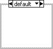

Conditional Disable Structure
Owning Palette: Structures
Requires: Base Development System
Has one or more subdiagrams, exactly one of which LabVIEW uses for the duration of execution, depending on the configuration of the conditions of the subdiagram. Use this structure when you want to disable specific sections of code on the block diagram based on some user-defined condition. Right-click the structure border to add or delete a subdiagram. When you add a subdiagram or right-click the structure border and select Edit Condition For This Subdiagram from the shortcut menu, you can configure conditions in the Configure Condition dialog box.

 Add to the block diagram Add to the block diagram |
 Find on the palette Find on the palette |
You can configure conditions using predefined symbols or custom symbols.
To scroll through the available subdiagrams, click the decrement and increment arrows in the selector label. After you create a Conditional Disable structure, you can add, duplicate, rearrange, or delete the subdiagrams.
Use the Diagram Disable structure to disable a section of a block diagram. Right-click the border of the Conditional Disable structure and select Replace with Diagram Disable Structure from the shortcut menu to switch to a Diagram Disable structure.
Example
Refer to the Conditional Disable Structure VI in the labview\examples\Structures\Disable Structures directory for an example of using the Conditional Disable Structure.
 Open example Find related examples
Open example Find related examples